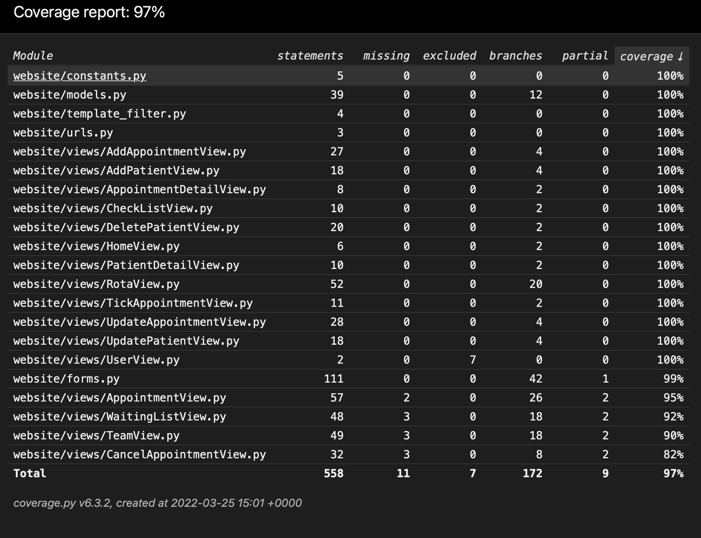
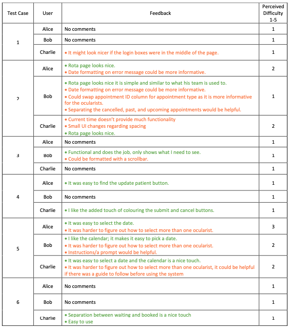

Testing Strategy
As this proof-of-concept is a client side application, it was nessecary to perform thorough automated
testing on it to ensure it acts as we would like and the functionality meets the requirements that were agreed upon in
out MoSCoW list. We extentensively covered our code, reaching a code coverage of 97%.
We also conducted user acceptance tests to find potential improvements and general feedback.
Automated Testing
For all automated testing, both unit tests and integration tests, we used the Django
"TestCase" module. This module inherits from the commonly used "unittest" module. For the
integration tests we used the Client class from the Django testing tools. This class allowed
us to
generate HTTP requests and from this we could ensure that the views and templates integrate
correctly.
We created a class called "Builder" for automated tests. This class defines the setUp and
tearDown functions. In these functions a database is created and populated with data also a
user is created and logged in. This makes the test results predictable. Once the test has
been done on the database, it's contents are deleted.
The Python "coverage" module was used to conduct analysis of the code coverage of these
tests. This helped us to conclude whether we had sufficiently tested the code.
Unit Testing
We used unit-testing to test functionality of individual functions and classes such as the functions that clean the form's input data. With unit-tests we verified whether the functions in the models and the form validation operated as we expected.
def test_clean_appointment_clash(self):
data = {
'PAS_number': 1234,
'appointment_status': self.AppointmentCancelled.pk,
'appointment_date': '2022-01-01',
'appointment_start_time': '10:00:00',
'appointment_code': self.N01.pk,
'team_member': self.user_1.pk,
'appointment_information': '',
'changes_to_be_confirmed_on_pas': ''
}
form = AppointmentForm(data)
self.assertFalse(form.is_valid())
In the above code snippet is an example of a unit-test on a form. In this case we test whether the form accepts an appointment that currently clashes with another, this is something that we don't want to happen. In this case it clashes with the only other appointment in the database. The data gets passed to the form and then we assert that the form is not valid. This test returns False which is what we would expect.
Integration Testing
We used intergration testing to test whether different parts of the code integrate correctly
and produce the expected output with a given input.
With our integration tests we verified whether views and templates integrated correctly.
We used client to make a request then we checked things such as:
• Whether we get redirected.
• Where we redirect to.
• What the status code is.
• If we actually added/deleted from the database.
• What was passed to the template.
• Which template was rendered.
Integration tests were the main bulk of our automated testing.
def test_post_add_patient_valid(self):
data = {
'PAS_number': 12345,
'first_name': 'ab',
'middle_name': 'abc',
'surname': 'abc',
'DOB': '2001-10-11',
'priority_code': self.Priority1.pk,
'patient_status': self.PatientCancelled.pk,
'patient_information': ''
}
response = self.client.post('/add_patient/', data=data, follow=True)
self.assertEqual(response.status_code, 200)
self.assertTemplateUsed(response, 'website/wait_list.html')
self.assertTrue(Patient.objects.filter(PAS_number=12345).exists())
self.assertEqual(len(Patient.objects.all()), 2)
In the above code snippet we submit a valid form to add a patient. We test the status code, template used and whether the patient was successfully added to the database. This test passes and provides the output and behaviour that we expect.
The unit-tests and integration tests all exist together in the tests folder. Through the use of integration tests and unit-tests we measured a code coverage of 97% which can be seen in the report below. After this analysis of our testing practices, we believe that we have covered a sufficient amount of our code and the code operates as we would expect. We can also conclude that the functionality that we implemented has been implemented correctly. We know this because all of the automated tests which test this functionality generate passes.
User Acceptance Testing
We conducted user acceptance tests. We gave the user a task, these tasks are listed under the Test Cases below. After completing the task we asked the user to rate how difficult they found the task and to provide any feedback if they had any to give.
Simulated Testers
Alice
Alice is a middle-aged team manager at a logistics company who uses computers on a daily
basis.
This user represents an average person who hasn't recieved much formal training with any software.
Bob
Bob is a senior ocularist at Moorfields Eye Hospital.
This user represents someone who is
highly specialised and knows what added features would be beneficial to other ocularists
using the system.
Charlie
Charlie is an Electronic and Electrical Engineering student at UCL who is adept with using
technology.
This user represents a person who is proficient with computers and quick to learn new
computer skills.
*Real names of the testers have not been used to preserve confidentiality.
Test Cases
1. Go to the hosted server and login as an ocularist.
2. Create an appointment for today and view it on 'My Rota' page.
3. View your weekly rota.
4. Update a patient of your choosing on the database.
5. View only ocularist 2's rota and ocularist 3's rota for today.
6. Search appointment by appointment ID, find appointment 2351.
Feedback
